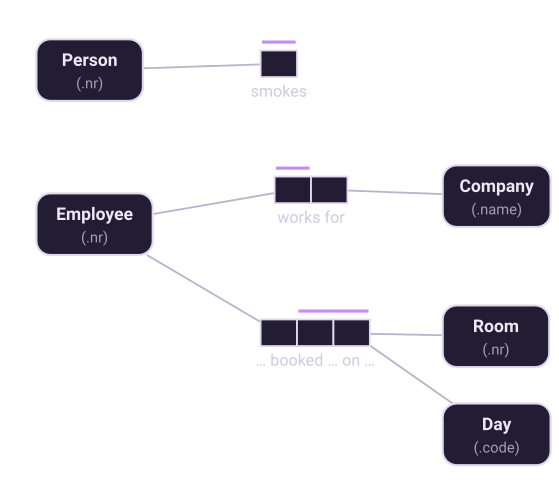
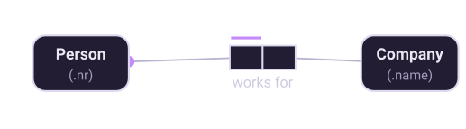

Chapter 4 of 10
Predicates, roles and readings
A predicate is a sentence with holes in it. The holes are roles.
Arity
A logical predicate is a sentence with one or more object holes, each of which is filled by a term naming an object. The number of holes is the predicate's arity, and each hole is a role, drawn as a box.

- Unary — one role. Person smokes. A property, with no second object. This is how ORM records a boolean without inventing a true/false value type.
- Binary — two roles. The overwhelming majority of fact types.
- Ternary and above — three or more roles, for facts that genuinely cannot be split. Chapter 5 gives the test for whether yours qualifies.
Higher arities are legal but rare, and rarity is a signal: if you have drawn a five-role fact type, the usual explanation is that several facts have been bundled together.
Roles are positions, not types
Nothing requires the roles of a fact type to be played by different object types. Person manages Person has two roles, both played by Person; Person voted for Person is the same shape. Such fact types are called ring fact types and they are perfectly ordinary — chapter 7 covers the constraints that apply to them.
When the same type plays two roles, giving the roles names — manager, subordinate
— makes the model much easier to read, and gives the mapper something better than
person2 to call the second column.
Readings
A reading is the text of the predicate with its holes marked. In Factum the holes are numbered placeholders:
{0} works for {1}The numbers index into the reading's role order, which is what allows the same fact type to be read in more than one direction. Add a second reading with the roles in the other order and the fact type reads both ways:

{0} works for {1} roles: Person, Company
{0} employs {1} roles: Company, PersonInverse readings are not decoration. Verbalization picks whichever reading starts at the role it needs to talk about, so a fact type with only one reading sometimes produces a clumsy sentence like "Each Company is related to at most one Person in …" where a natural one was available. If a verbalization reads badly, the usual fix is to add the reading it wanted.
Writing readings that verbalize well
The verbalizer inserts quantifiers where the placeholders are — each, some, at most one — so the text around them has to survive that substitution. A few habits help:
- Start with the placeholder.
{0} works for {1}, notthe employer of {1} is {0}. The first form becomes "Each Person works for exactly one Company"; the second becomes a mess. - Use a verb phrase, not a noun.
{0} has {1}is weak but workable;{0} was born on {1}is better. "Has" is the most overused predicate in data modeling and it almost always hides a more specific verb. - Do not put the object type names in the text. Write
{0} works for {1}, notPerson works for Company— the players are substituted in, and hard-coding them breaks the sentence when the fact type is reused. - Say the fact, not the constraint.
{0} works for at most one {1}is wrong: "at most one" belongs to a uniqueness constraint, which will add it for you and would otherwise say it twice.
For ternary and higher fact types the reading carries text between every pair of placeholders:
{0} booked {1} on {2}. Getting this right matters more than for binaries,
because a badly-worded n-ary reading is very hard to check against examples.
Naming, briefly
Object type names are singular and start with a capital: Person, not People or person. They must be unique within the model, since the name is how the verbalizer refers to the type. Predicate names need not be unique — several fact types may read "has" — because a predicate is identified by its fact type, not its text.